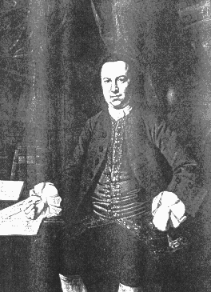

Saturday, January the 29th, 2011
back to: title, date or indexes
Here, on a whim, is an outtake from the legendary recording of Christopher Smart's Jubilate Agno, broadcast on ResonanceFM in December 2007 and available for perpetual listening here.
In this (very) brief extract, Mr Key's sober delivery of what we might dub a Smartism causes Ms Speedwell to collapse in giggles.
